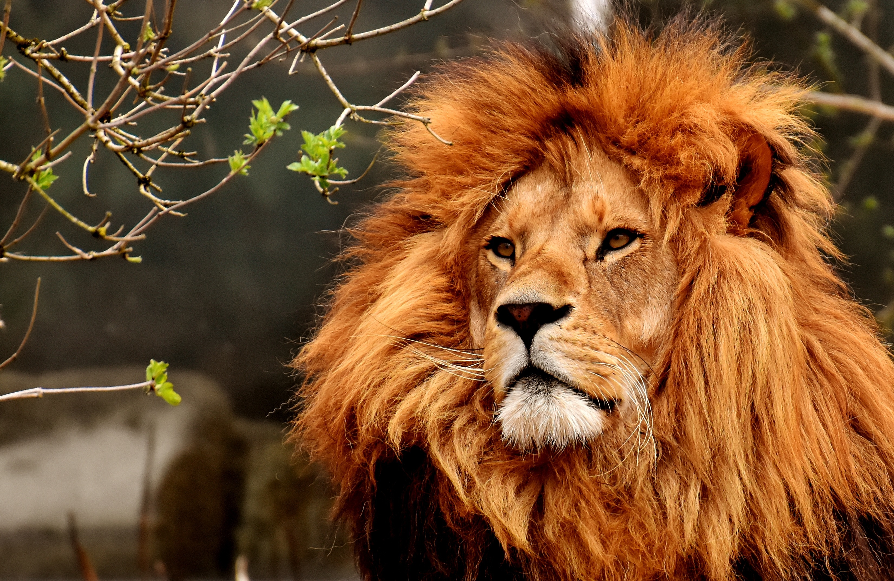
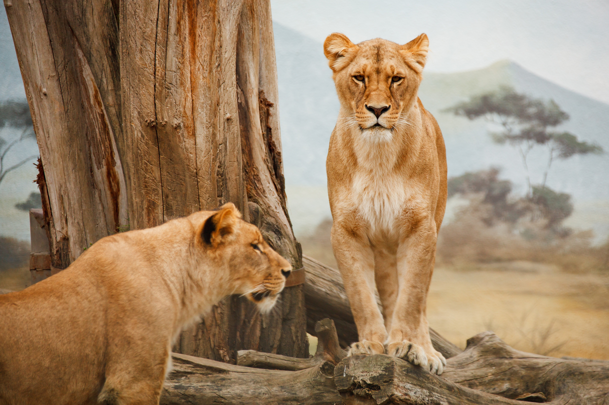
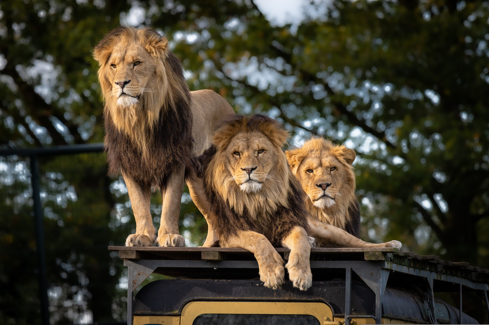
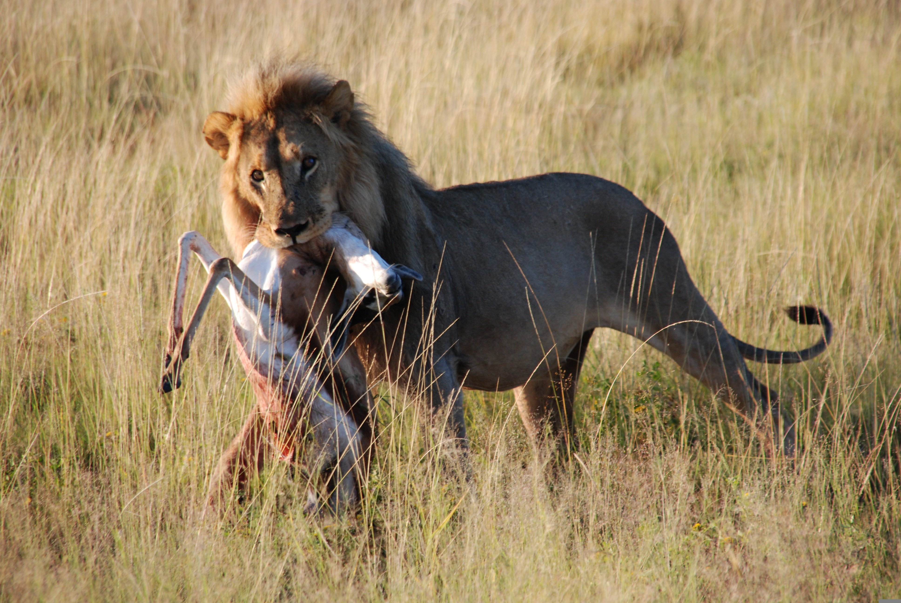
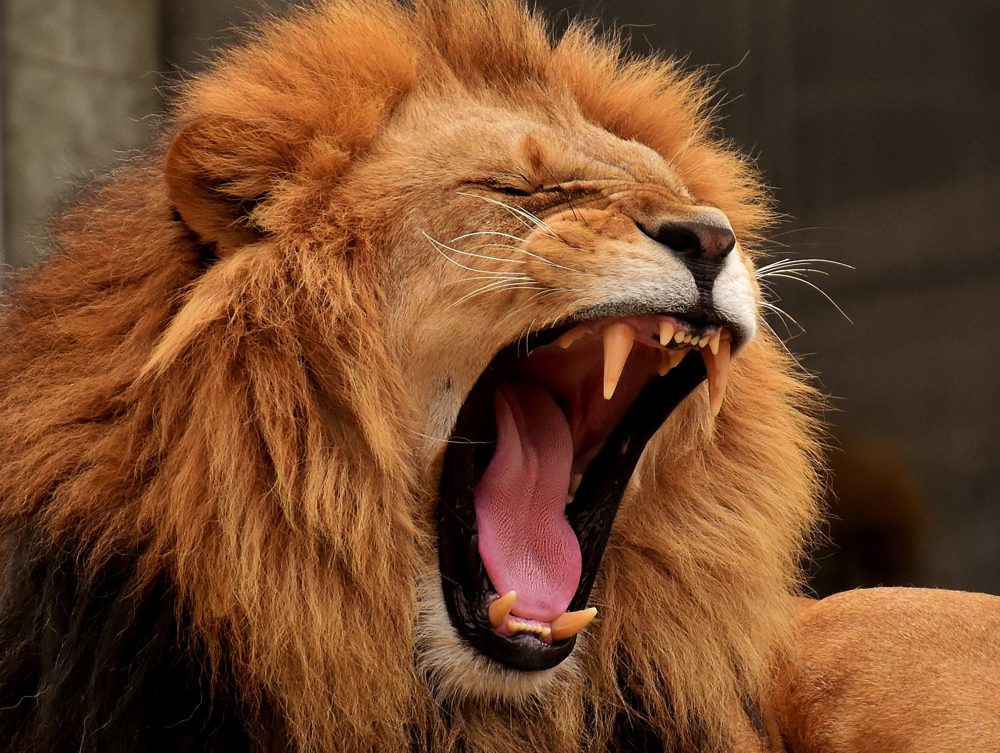

Welcome to our comprehensive guide on lions! Dive into the world of these majestic creatures, learn about their habitats, behaviors, diets, and discover how we can all play a part in their conservation.
About Lions

Lions (Panthera leo) are one of the most iconic animals in the animal kingdom. Known as the "Kings of the Jungle," lions are celebrated for their strength, majestic appearance, and complex social structures. They primarily reside in Africa, with a small population in the Gir Forest of India.
Habitat

Lions are typically found in savannas, grasslands, and open woodlands. They prefer habitats that offer plenty of cover for hunting and ample prey. The African lion’s range includes sub-Saharan Africa, while the Asiatic lion resides in a small region in India.
Behavior

Lions are unique among big cats due to their social nature. They live in groups called prides, which can consist of up to 30 members. A pride usually includes several related females, their cubs, and a few males. Females are the primary hunters, working together to bring down prey. Males defend the pride’s territory from intruders
Diet

As apex predators, lions primarily hunt large herbivores such as zebras, wildebeests, and buffaloes. They rely on teamwork and strategy to capture their prey, often hunting at night or during the early morning hours to take advantage of cooler temperatures and the element of surprise.
Life Cycle
As apex predators, lions primarily hunt large herbivores such as zebras, wildebeests, and buffaloes. They rely on teamwork and strategy to capture their prey, often hunting at night or during the early morning hours to take advantage of cooler temperatures and the element of surprise.
Lions are classified as vulnerable by the International Union for Conservation of Nature (IUCN). Their populations are declining due to habitat loss, human-wildlife conflict, and poaching. Conservation efforts focus on habitat preservation, anti-poaching initiatives, and community education to promote coexistence between lions and humans.
Fun Facts
A lion's roar can be heard up to 5 miles away and serves as a way to communicate with pride members and ward off rivals.
Lions can reach speeds of up to 50 mph but only in short bursts due to their lack of stamina.
Unlike other big cats, lions are social and live in prides, which helps them hunt more efficiently and protect their young.

How can you help?
Support wildlife conservation organizations that work to protect lion habitats and reduce human-lion conflicts. Spread awareness about the importance of lions in the ecosystem and advocate for policies that safeguard their future. Consider donating to or volunteering with organizations dedicated to wildlife conservation.